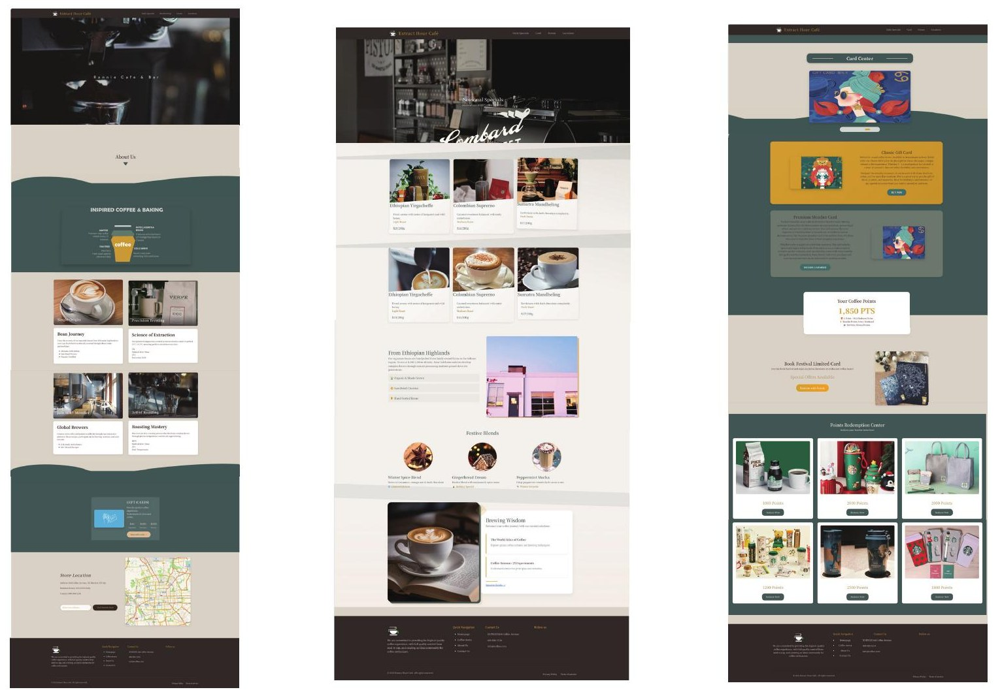
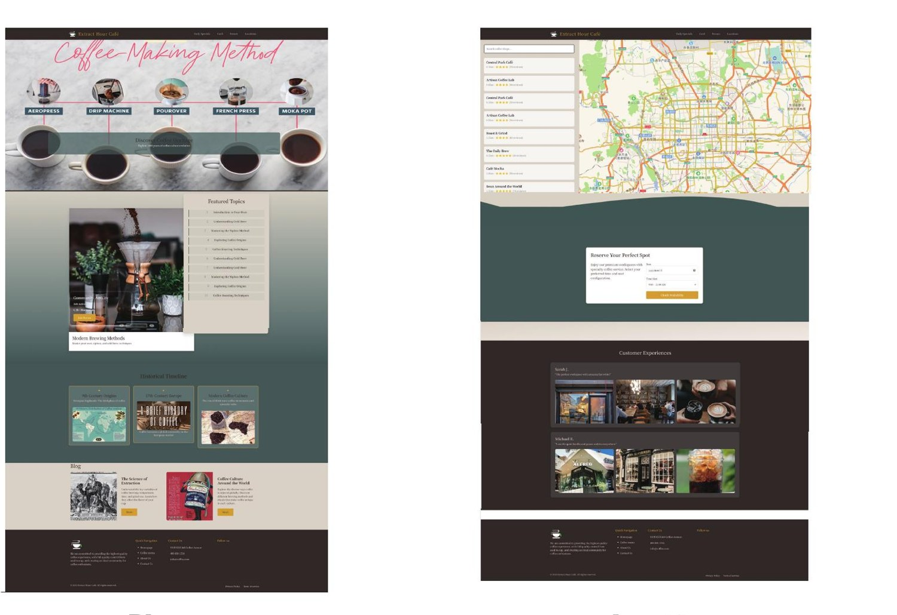

Visual direction & page composition视觉方向与页面设计
Original café website design studies show the homepage, daily menu, card, blog and location layouts. A dark café palette, a photographic landing section and clear navigation connect the homepage, blog, card, map and FAQ content. The walkthrough demonstrates the WordPress implementation.
